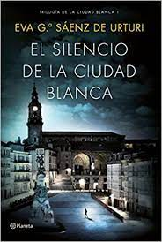

Sinopsis

Tasio Ortiz de Zárate, el brillante arqueólogo condenado por los extraños asesinatos que aterrorizaron la tranquila ciudad de Vitoria hace dos décadas, está a punto de salir de prisión en su primer permiso cuando los crímenes se reanudan de nuevo: en la emblemática Catedral Vieja de Vitoria, una pareja de veinte años aparece desnuda y muerta por picaduras de abeja en la garganta. Poco después, otra pareja de veinticinco años es asesinada en la Casa del Cordón, un conocido edificio medieval. El joven inspector Unai López de Ayala —alias Kraken—, experto en perfiles criminales, está obsesionado con prevenir los crímenes antes de que ocurran, una tragedia personal aún fresca no le permite encarar el caso como uno más. Sus métodos poco ortodoxos enervan a su jefa, Alba, la subcomisaria con la que mantiene una ambigua relación marcada por los crímenes… El tiempo corre en su contra y la amenaza acecha en cualquier rincón de la ciudad. ¿Quién será el siguiente? Una novela negra absorbente que se mueve entre la mitología y las leyendas de Álava, la arqueología, los secretos de familia y la psicología criminal. Un noir elegante y complejo que demuestra cómo los errores del pasado pueden influir en el presente. Primera parte de la Trilogía de la Ciudad Blanca: El silencio de la ciudad blanca, Los ritos del agua, Los señores del tiempo.
Sinopsis
Ana Belén Liaño, la primera novia de Kraken, aparece asesinada. La mujer estaba embarazada y fue ejecutada según un ritual de hace 2600 años: quemada, colgada y sumergida en un caldero de la Edad del Bronce -1992 - Unai y sus tres mejores amigos trabajan en la reconstrucción de un poblado cántabro. Allí conocen a una enigmática dibujante de cómics, a la que los cuatro consideran su primer amor.
2016. Kraken debe detener a un asesino que imita los Ritos del Agua en lugares sagrados del País Vasco y Cantabria cuyas víctimas son personas que esperan un hijo. La subcomisaria Díaz de Salvatierra está embarazada, pero sobre la paternidad se cierne una duda de terribles consecuencias. Si Kraken es el padre, se convertirá en uno más de la lista de amenazados por los Ritos del Agua.
Sinopsis
El esperado desenlace de la Trilogía de la Ciudad Blanca. El misterio llega a su fin. Vitoria, 2019. Los señores del tiempo, una épica novela histórica ambientada en el medievo, se publica con gran éxito bajo un misterioso pseudónimo: Diego Veilaz.
Victoria, 1192. Diago Vela, el legendario conde don Vela, retorna a su villa después de dos años en una peligrosa misión encomendada por el rey Sancho VI el Sabio de Navarra y encuentra a su hermano Nagorno desposado con la que era su prometida, la noble e intrigante Onneca de Maestu.
Unai López de Ayala,Kraken, se enfrenta a unas desconcertantes muertes que siguen unmodus operandi medieval. Son idénticas a los asesinatos descritos en la novela Los señores del tiempo: un envenenamiento con la «mosca española»―la Viagra medieval―, unas víctimas emparedadas como se hacía antaño en el «voto de tinieblas» y un «encubamiento», que consistía en lanzar al río a un preso encerrado en un tonel junto con un gallo, un perro, un gato y una víbora.
Las investigaciones llevarán a Kraken hasta el señor de la torre de Nograro, una casa-torre fortificada habitada ininterrumpidamente desde hace mil años por el primogénito varón. Pero el reverso de tanta nobleza es la tendencia de los señores de la torre a padecer el trastorno de identidad múltiple, un detalle que arrastrará a Estíbaliz a vivir una arriesgada historia de amor.
Unai López de Ayala acabará descubriendo queLos señores del tiempo tiene mucho que ver con su propio pasado. Y ese hallazgo cambiará su vida y la de su familia.
Sobre el Autor

Juan Gómez-Jurado (Madrid, 1977) es periodista y autor de varias novelas de gran éxito, traducidas a cuarenta lenguas. Las novelas sobre el universo de Antonia Scott, El paciente, Cicatriz, Reina Roja, Loba Negra y Rey Blanco (todas publicadas en Ediciones B), se han convertido en el mayor fenómeno de ventas del thriller español y han consagrado a su autor como uno de los máximos exponentes del género a nivel internacional. Actualmente colabora con varios medios y es cocreador de los podcast Todopoderosos y Aquí hay dragones.